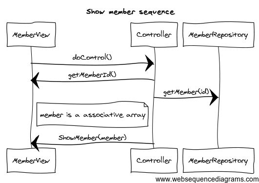
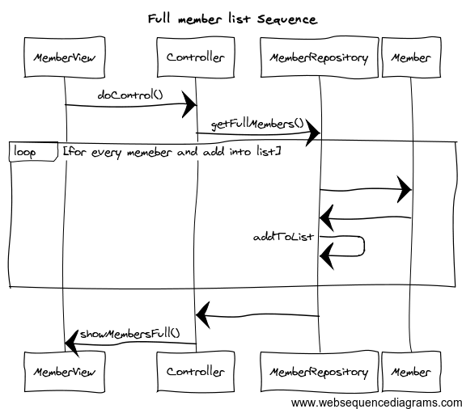

Portfolio - th222fa
Workshop 2
Länk till körbar applikation
Länk till GitHub repo
Klassdiagram

Sekvensdiagram
För att lägga till båt

för att ändra en båt

För att ta ta bort en båt

För att visa en medlem

för att lägga till medlem

För att ändra en medlem

För att ta bort en medlem

För att visa en kompakt lista

För att visa full lista

Vi fick i uppgift att utföra två peer reviews för andra lösningar
Första peeren
Hej!
Vi har utfört peer reviewn för Workshop 2
I klassdiagrammet så använder du aggregations från main till boat och main till member och vi
tycker att du borde ha en vanlig association här istället. Resten av klassdiagrammet ser bra ut.
I sekvensdiagrammet Titta på en specifik medlems uppgifter så borde du ha två streck, det vill
säga en pil från GetMemberInfo till Boat och sedan en pil från Boat till GetMemberInfo istället för 1
streck med dubbla pilar på.
I sekvensdiagrammet Visa medlemmar (Full och kompakt) så saknas det lite pilar från Member
till FullList borde det returneras något nu kallar du bara på Get full member info men inget
kommer tillbaka till Fullist så egentligen finns det ingen lista för vyn att presentera. Det borde
även vara en pil från Boat till FullList som returnerar alla båtar. Search for number of boats borde
ha två streck istället för bara ett, ett som kallar på Search for number of boats och en som
returnerar den listan. Från Member till Compact list ska det också vara en pil som returnerar
member info, för som det är nu så kallas bara den funktionen men inget returneras. Annars ser
det ok ut.
Main metoden är väldigt stor vilket resulterar i att den blir svår att förstå men vi ser att du har en
del model grejer i vyn till exempel save, add, remove och edit vilka borde ligga i modellen i stället.
Annars är koden bra.
Som en utvecklare så förstår man hur programmet ska fungera och se ut, så
sekvensdiagrammen och klassdigrammet är bra gjorda.
Det som är bra med desigenen och implementationen är att koden är välskriven och all kod
används.
Det som borde fixas föra att uppnå betyg 3 är att modell grejerna i main metoden som ä eran vy
ska flyttas till modell klasser. Sedan bör också diagrammen fixas till lite med pilar och sådant.
Andra peeren
Hej vi har utfört peer review av din workshop 2, här kommer vår feedback:
Vi ser att du sätter meddelanden i controllern och i modellen, dessa borde vara i vyn.
Koden ser bra ut och det finns inga dupliceringar vad vi kan hitta och all kod används det vil säga
det finns ingen död kod.
Vi ser även att du inte har några relationer mellan klasserna i klassdiagrammet förutom arvet till
repositoryklassen. Detta måste du fixa.
I sekvensdiagrammen Add member och Edit member så har du en loop och den förtår vi inte
varför du har. Ska du verkligen ha den?
I sekvensdiagrammet Remove member så bör du väl ha en pil från Membercontroller till vyn som
hämtar ID:t. Du bör också ha en pil från Membercontroller till MemberRepositoryt som skickar
med Id från vyn.
I sekvensdiagrammet View member så saknar du en pil från membercontroller till MemberView
som hämtar ut ID. Du bör också ha en pil från memberController till MemberRepository som
skickar ID. Du bör också ha en pil från memberController till BoatRepository som skickar ID.
I sekvensdiagrammen Add boat och Edit boat så har du en loop och den förtår vi inte varför du
har. Ska du verkligen ha den?
I sekvensdiagrammet Remove boat så bör du väl ha en pil från Boatcontroller till vyn som hämtar
ID:t. Du bör också ha en pil från Boatcontroller till BoatRepositoryt som skickar med Id från vyn.
I sekvensdiagrammet Compact list så saknas en pil från MemberController till
MemberRepository som hämtar alla Members, sedan får du väll tillbaka en lista som innehåller
alla medlemmar och inte ID. Så den parametern med (ID) ska bort. Sedan ska du även skicka
med listan när du kallar på vyn. Det saknas också en pil från MemberView till BoatRepository
som hämtar antalet båtar som en Member har.
I sekvensdiagrammet Verbose list saknar du en pil fårn MemberController till MemberRepository
som hämtar alla medlemmar och sedan så ska inte MemberRepository retunera något ID utan
en lista. Sedan borde du skicka med listan till MemberView. Sedan saknas en pil från
MemberView till BoatRepository som hämtar alla båtar.
Som en developer skulle jag inte förstå klassdiagrammet då det inte finns några relationer till de
andra klasserna.
Om du fixar klassdiagrammen framförallt så kommer du att klara betyg 3.